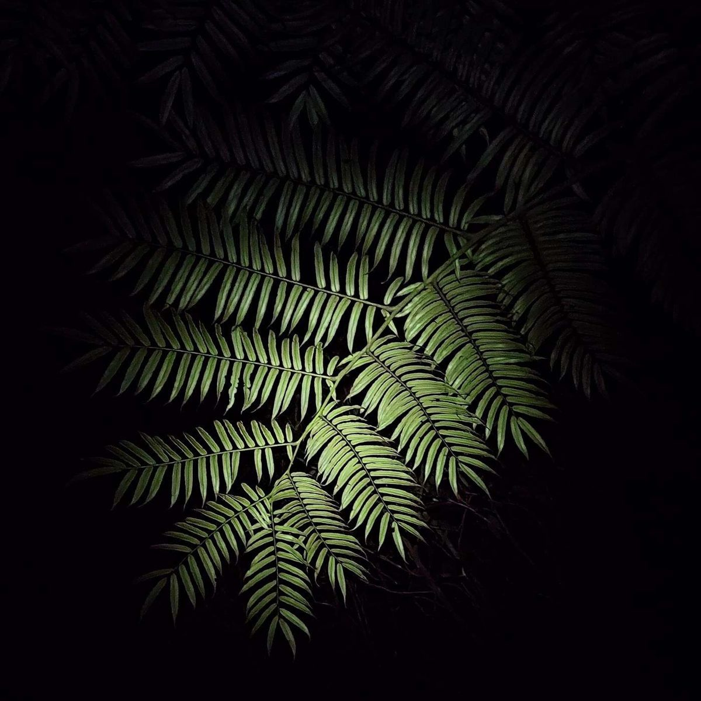
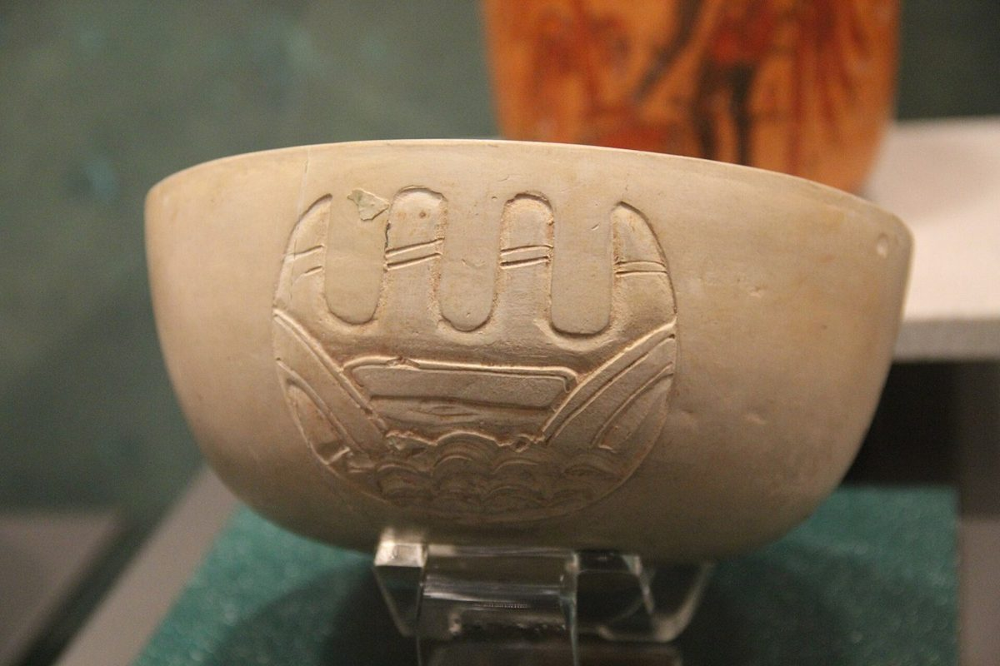
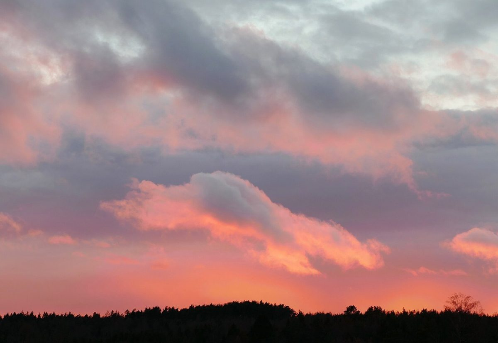

店のこと
図の読み方と、確認できたこと
このページは、トップの配置図の六つの部位を、サイトの各所に見立てて並べたものです。制作側の連想で、お店の理念・由来とは無関係です。
写真(イメージ)
図のあいだの、三枚



確認できていること
いまの情報は、この二つだけ
| 所在地 | 〒606-8386 京都府京都市左京区新丸太町７５−９ |
|---|---|
| @shotocafe_kyoty | |
| それ以外 | 準備中(お店からの情報提供があれば、ここに反映します) |

写真(イメージ)
二枚の余白
